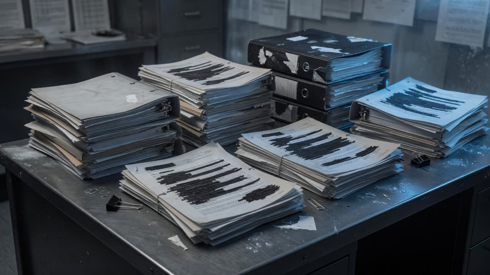

The Griffon upgrade has a contract number. The public registry still returns zero.
W8475-205391/001/BF — nearly eight hundred million dollars on CanadaBuys and the Defence Capabilities Blueprint. Search the same number on open.canada’s contracts portal and you get nothing.

On the record
The Royal Canadian Air Force’s CH-146 Griffon Limited Life Extension is not a rumour. Public Services and Procurement Canada announced a nearly $800-million award to Bell Textron Canada Limited on 30 May 2022. The Defence Capabilities Blueprint names the implementation instrument: W8475-205391/001/BF. CanadaBuys lists the value as CAD 797,556,147.
Not claimed from this package alone
What is missing is the ordinary accountability trail. A search of the open.canada contracts portal for that contract number returned zero records on 11 July 2026. Paid-to-date is not in the public freezes. The official DND project page still reads like a 2020 definition schedule — Phase 3, full operational capability 2027 — while the blueprint already describes implementation as in progress and frames the life extension as a bridge to a Next Tactical Aviation Capability Set.
How this is labeled
In late June 2026, reporting said the work was paused for cost, schedule, complexity, and replacement-fleet planning. That pause remains reporting-class until a stop-work instrument is public. The deeper pattern is older: a named multi-hundred-million-dollar instrument that the award channels publish and the proactive disclosure search does not surface.